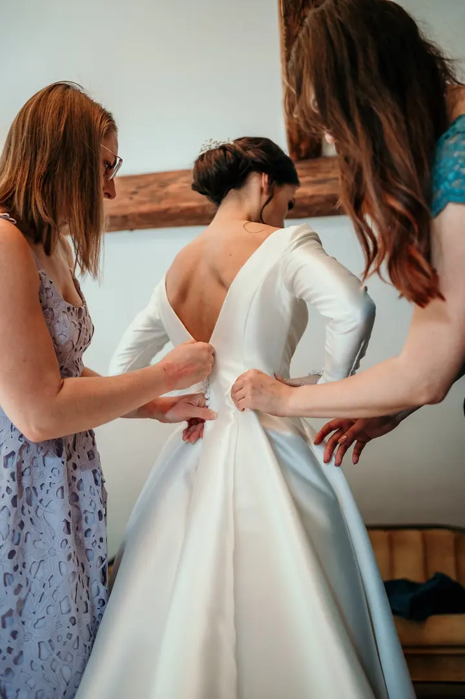
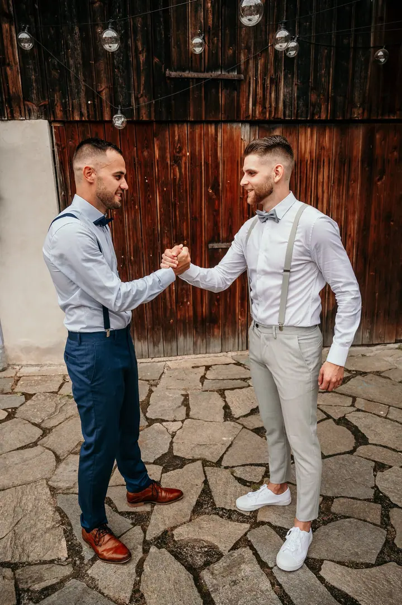
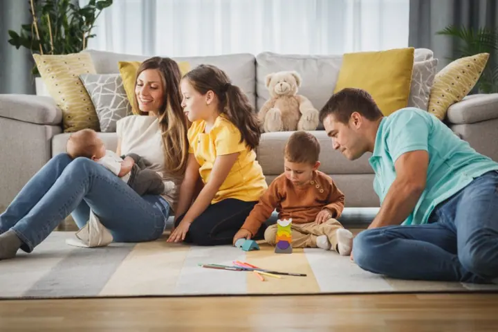
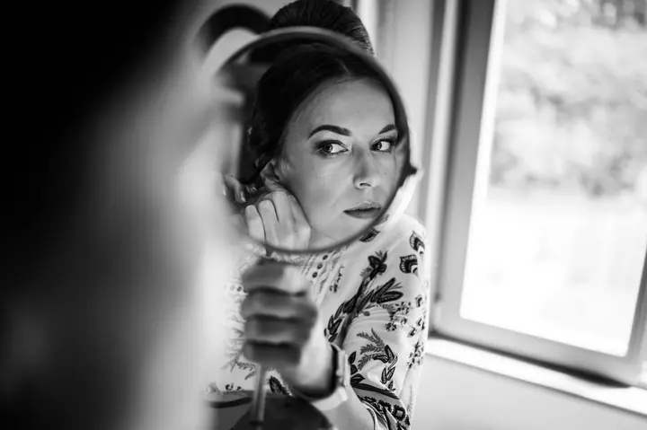

jedna
Svatby
Svatbu fotím hlavně reportážně. Sleduji všechno důležité i zajímavé, nezapomenu na detaily a nic zbytečně nearanžuji, takže emoce na fotkách jsou opravdové.

Svatební a rodinný fotograf · Plzeň, okolí Plzně

Jmenuji se Jakub Šebek a v Plzni a okolí fotím svatby a rodiny. Jsem fotograf pro ty, kdo se neradi fotí, a tak u mě nečekejte strnulé pózy, ale klidnou reportáž a skutečné emoce.
Více o mně
Co fotím
jedna
Svatbu fotím hlavně reportážně. Sleduji všechno důležité i zajímavé, nezapomenu na detaily a nic zbytečně nearanžuji, takže emoce na fotkách jsou opravdové.
Fotím venku, kde dostanete fotky barevně i černobíle, nebo u vás doma v černobílé úpravě. Focení doma se hodí i pro miminka zhruba od 4 do 9 měsíců.
Vyzkoušíte si, jak párové focení probíhá, ještě před svatbou. Průběh je podobný tomu svatebnímu a můžeme ho spojit s předsvatební schůzkou.
Firemní akce, rodinné oslavy, plesy nebo vernisáže. Počet fotek odpovídá délce focení a každou vybranou fotku upravím zvlášť.
Mějte raději oči jeden pro druhého než pro foťák.


Za objektivem
Ke svatbě přistupuji hlavně reportážně. Vím, kdy přijít blíž a kdy fotit s odstupem. Sleduji všechno důležité i zajímavé a nezapomenu ani na detaily výzdoby a svatebních doplňků. Situace, které by se samy od sebe nestaly, ale nevyvolávám, pokud mě o to sami nepožádáte.
Při párových fotkách nemám rád složité a přehnané pózování. Poradím vám, kam a jak si stoupnout, ale nejdůležitější je pro mě vaše pohoda. Na skupinové fotce s rodinou a přáteli se snažím udržet uvolněnou atmosféru a během dne se domlouvám s koordinátorem, kameramanem i DJem.
Každou fotku, kterou ode mě dostanete, upravím zvlášť, neupravené fotky neposílám. Ke svatbě patří i tištěné fotky, které si sami vyberete. Spolu s nimi vám v krabičce předám USB flashku se všemi upravenými fotkami.
Jakub
Napíšete mi nebo zavoláte a ověříme, že mám váš termín volný. Zeptám se na základní informace o svatbě a odpovím na vaše dotazy. Smlouvu a rezervační poplatek pak vyřešíme přes e-mail.
Nejpozději měsíc před svatbou se blíž seznámíme, projdeme harmonogram a domluvíme, kam zařadit párové focení. Pokud chcete, spojíme schůzku s předsvatebním focením.
Fotím hlavně reportážně a nic zbytečně nearanžuji. Skupinové fotky zorganizuji a u párových vám jen poradím, kam si stoupnout.
Hotovou galerii vám pošlu nejpozději do 30 dnů, obvykle o něco dřív. Vyberete si fotky k tisku a výtisky vám předám v krabičce spolu s USB flashkou.
Portfolio
Otázky
Pro takové lidi fotím nejraději. Nečekejte strnulé pózy ani nahrané úsměvy. Většinu dne fotím nenápadně a při párových fotkách jen poradím, kam a jak si stoupnout.
Upravené fotky dodávám zhruba za 3 až 4 týdny, nejpozději do 30 dnů. Když nechcete čekat, můžete si objednat expresní zpracování: fotky ze svatby do 3 pracovních dnů a tisk do 5 pracovních dnů.
Svatby v Plzni a blízkém okolí do 30 km fotím s dopravou zdarma. Mimo tuto oblast počítám 10 Kč za kilometr.
Neupravené fotky neposkytuji. Každou fotku, kterou dostanete, upravím a přiměřeně vyretušuji.

Napište pár vět o tom, co si představujete. · +420 777 008 402